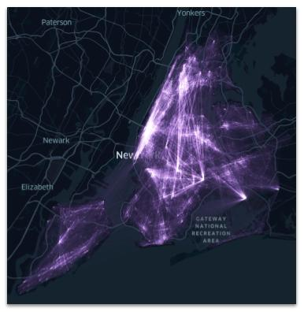
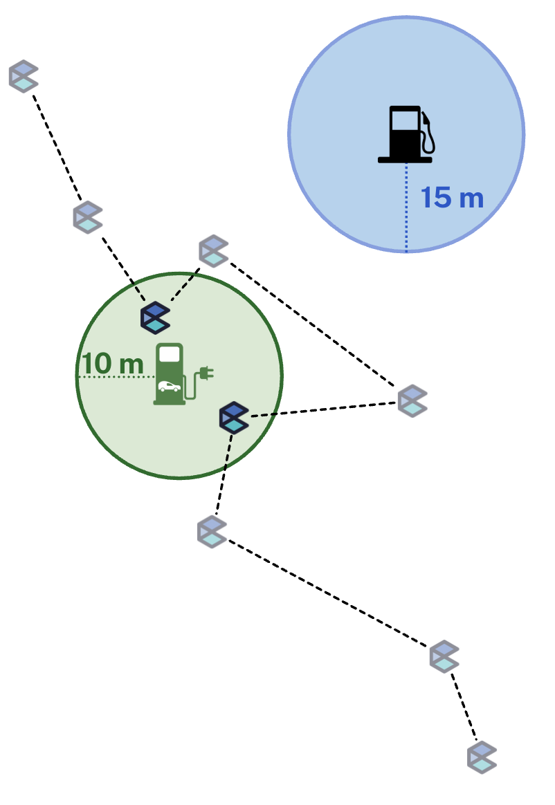
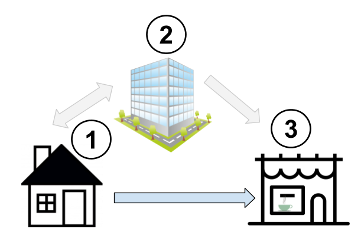
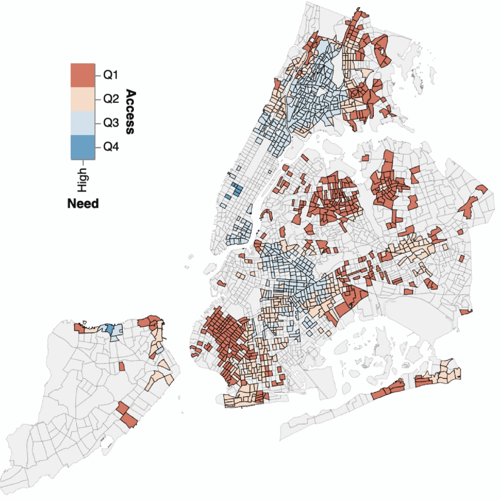
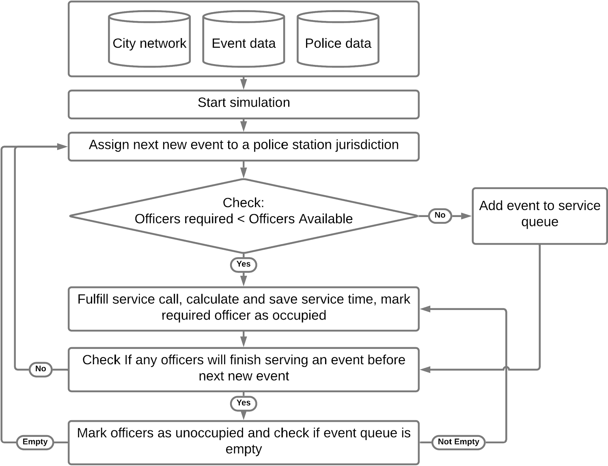

Research

Neighborhood Connectivity
Neighborhoods are often characterized by residential demographics, density, or the distribution of Points of Interest (POIs), yet patterns of mobility—where residents travel and who visits a neighborhood—also play a central role in shaping neighborhood character. This work leverages large-scale mobility data at the Census Block Group (CBG) level to construct neighborhood connectivity networks across 74 Metropolitan Statistical Areas (MSAs) in the United States. Using the resulting network structure, we propose a new data-driven neighborhood typology. We then integrate additional data sources—including demographic characteristics, Point of Interest (POI) locations, and LEHD employment data—to examine how neighborhood connectivity relates to underlying social, economic, and spatial characteristics.This project is apart of a larger NSF project.

Community-Centric EV Charging
Electric vehicle charging stations (EVCS) constitute a critical component of modern urban infrastructure, and the rate of installation is remaining steady. This work proposes a new method of identifying EV drivers, allowing a broader exploration of their behavior and the ability to better inform optimal infrastructure placement. Prior to this work, the charging preferences of EV drivers have been limited to surveys, fields studies and, analyses of EVCS and station-level charging session data . These sources are either limited by sample size and study longevity, or confined to the duration of charging session event. Our study provides a new lens into understanding EV driver charging behavior and it's impact on surrounding businesses— through large-scale individual mobility data. This project is apart of a larger NSF project.

Hybrid Work
The concept of the "third place" introduced by Ray Oldenburg, refers to public spaces distinct from the home (the first place) and the workplace (the second place) that support everyday social interactions. However, the COVID-19 pandemic significantly increased the adoption of remote and hybrid work in certain industries, altering the long-established relationship between the first (home) and second (work) place. In this study, we aim to understand how the long-term shift to hybrid work culture has impacted the the use of third places in cities. We leverage anonymized, high-resolution mobile phone location data for 3 months in 2019 and June 2022 across eight major U.S.Metropolitan Statistical Areas (MSAs) to identify individual hybrid work behaviors and visits to third places.

Emergency Food Access
Emergency food access is a critical component of urban resilience and public health, yet significant spatial and temporal disparities persist. This work evaluates emergency food access in New York City using a multi-dimensional framework developed in collaboration with partners at City Harvest and the University of Colorado Boulder. We simulate travel times to the nearest food pantry throughout the week across four modes of transportation—walking, biking, driving, and public transit—while incorporating pantry-specific operating hours and the underlying urban transit infrastructure. Building on these measures, we propose an Emergency Food Access Index (EFAI) to systematically identify gaps in service by highlighting areas characterized by high need and low access.

Police Response Time and Resource Reallocation
Police response time is a central dimension of public safety and a key consideration in debates over alternative emergency response models. This work uses spatial network analysis to examine how reductions in police staffing may affect response times in urban settings. Modeling Chicago’s transportation system as a network, we simulate police responses from stations to incident locations and evaluate the effects of reallocating certain incident types to alternative responders. Using Chicago’s large, open-source police incident response dataset, we assess how response times change under a range of staffing and incident-allocation scenarios. Our results suggest that the current response time distribution can be maintained with a 30–60% reduction in police staffing levels, provided that some incidents are redirected to non-police responders.